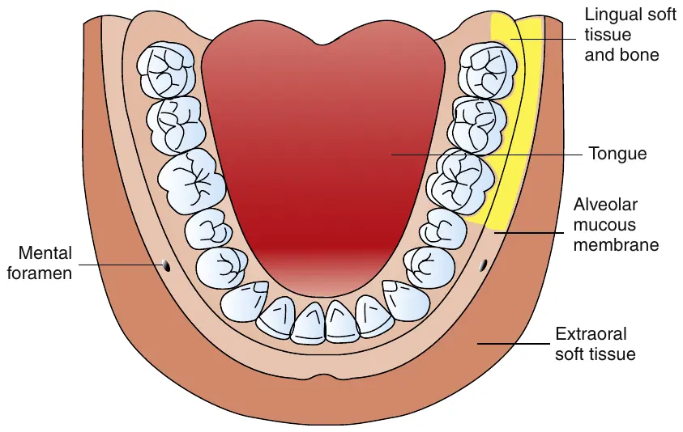
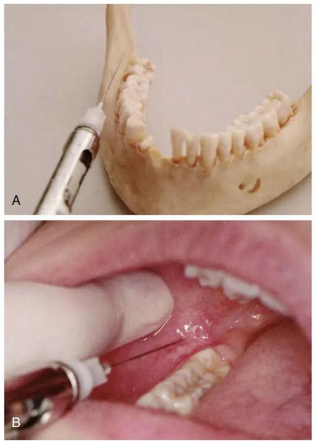

نسخه استخراجشده؛ ترجمه یا تأیید علمی انجام نشده است. وضعیت: captured
برای ترمیم مولر اول پایین، بلاک عصب آلوئولار تحتانی (IANB) زدهای و لب و زبان بیمار کاملاً بیحس است. کلمپ رابردم را که روی لثهی باکال میگذاری، بیمار از درد جا میخورد. چرا؟

لثهی باکال مولرهای پایین را عصب دیگری حس میدهد: عصب باکال، شاخهای از بخش قدامی عصب مندیبولار (V3). عصب آلوئولار تحتانی از بخش خلفی میآید، پس IANB عصب باکال را نمیگیرد.
فقط وقتی به بافت نرم باکال مولرها دست میزنی: کلمپ رابردم روی لثه، جرمگیری و کورتاژ، برداشتن پوسیدگی یا تراش زیر لثه، نخ رترکشن و نوار ماتریکس. برای ترمیم سادهای که به لثهی باکال کاری ندارد، زدن معمول بلاک باکال پس از IANB هیچ توجیهی ندارد. نام «لانگ باکال» هم که زیاد میشنوی دقیق نیست.
اشتباه رایج: محلول از محل سوزن به دهان برمیگردد چون سوزن زیادی سطحی است و بول کامل در بافت نیست. تزریق را قطع کن، سوزن را کمی عمیقتر ببر، دوباره آسپیره کن و ادامه بده.

موفقیت نزدیک ۱۰۰٪ است، چون عصب زیر مخاط است. بیمار معمولاً چیزی حس نمیکند؛ نشانهی موفقیت، کار بیدرد روی لثه است. عارضهی مهمش هماتوم است: گاز را دستکم ۳ دقیقه روی محل فشار بده.